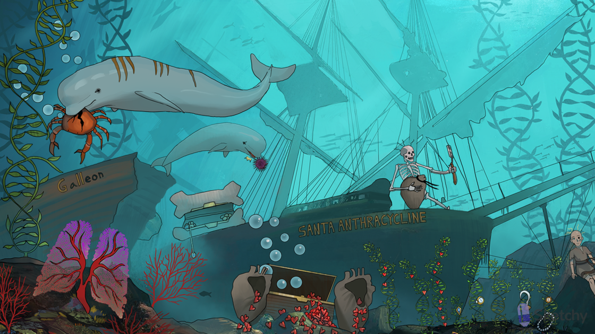

Beluga whale: bleomycin (antitumor antibiotic)
Oxide bubbles: bleomycin binds DNA and produces free radicals (superoxide, hydroxide)
Broken double helix kelp: free radicals produced by bleomycin cause single and double strand breaks in DNA
Galleon: bleomycin blocks the G2 phase of the cell cycle
Cracked anticancer crab: bleomycin treats many hematologic and solid malignancies (e.g. Hodgkin and Non-hodgkin lymphoma, germ cell tumors, squamous cell carcinoma of the skin, cervix, and vulva)
Lung coral: bleomycin can cause pulmonary toxicity (e.g. pneumonitis, pulmonary infiltrates)
Hyperpigmented striae: bleomycin can cause skin toxicity (e.g. rash, exfoliation, hyperpigmentation, atrophic striae)
Poking mouth: bleomycin (and anthracyclines) can cause mucositis and stomatitis
Bald beluga: bleomycin can cause alopecia
Santa Anthracycline: anthracyclines (antitumor antibiotics)
Rubies: “-rubicin” suffix of anthracyclines (e.g. doxorubicin, daunorubicin)
Oxide bubbles: anthracyclines produce free radicals (e.g. superoxide, hydroxide)
Rubies inserting into helical seaweed: anthracyclines (e.g. doxorubicin) intercalate in DNA → block DNA and RNA synthesis
Cracked cancer crab: anthracyclines (e.g. doxorubicin) treats a broad range of solid and hematologic malignancies
Dilated heart ruby sacks: anthracyclines (e.g. doxorubicin) can cause cardiotoxicity (e.g. dilated cardiomyopathy)
Chelating the heart sack: dexrazoxane (iron chelator) prevents anthracycline-induced cardiotoxicity
Up on deck with razor: dexrazoxane (iron chelator)
Depleted bone chest: anthracyclines (e.g. doxorubicin) and actinomycin D can cause myelosuppression
Bald pirate: anthracyclines (e.g. doxorubicin) can cause alopecia
Doll artifact: actinomycin D (antitumor antibiotic)
Artifacts inserting into helical seaweed: actinomycin D intercalates in DNA → block DNA and RNA synthesis
Child’s artifact: actinomycin D treats numerous pediatric malignancies (e.g. Wilms tumor, Ewing sarcoma, rhabdomyosarcoma)
Bald doll: actinomycin D can cause alopecia